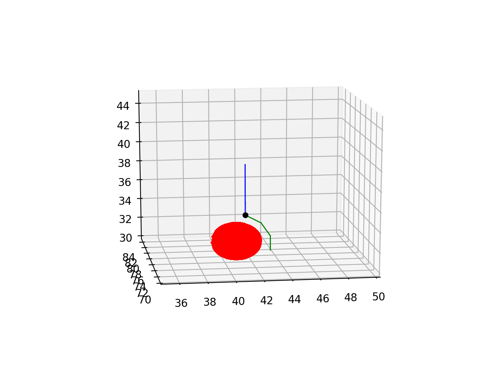

Additional growth methods¶
Besides add_child other Front methods can be called by self inside self.manage_front to cause growth, migration or retraction of fronts. These methods should not be called for fronts other than self.
add_branch method¶
Sometimes growing a long cylindrical child front is not possible or useful because it cannot circumnavigate a blocking structure. A sequence of shorter fronts making, for example, an arc around the other structure may be a better solution. But with add_child these shorter fronts would have to be made during consecutive cycles, resulting in slower growth. add_branch solves this problem: it grows a series of connected cylindrical fronts specified as a list of Point, where each new front is the parent of the next one:
def manage_front(self,constellation):
...
# self has self.end at 41.66, 77.08, 34.18
# points form a partial arc around a sphere centered at 41.01, 77.20, 31.49
points = [Point(42.74, 76.43, 33.50),Point(43.36, 75.98, 32.29),Point(43.35, 75.86, 30.86)]
new_fronts = self.add_branch(constellation,points)
...
this code will, if successful, produce 3 new fronts that have consecutive parent->child relations as: self -> new_fronts[0] -> new_fronts[1] -> new_fronts[2]. The result of the above code is shown below with blue self, self.end marked as the black dot, and the new_fronts colored green:
{kind=link}
Like for add_child it is better to embed the add_branch call into a try: and except: sequence:
def manage_front(self,constellation):
...
# self has self.end at 41.66, 77.08, 34.18
# points form a partial arc around a sphere centered at 41.01, 77.20, 31.49
points = [Point(42.74, 76.43, 33.50),Point(43.36, 75.98, 32.29),Point(43.35, 75.86, 30.86)]
try:
new_fronts = self.add_branch(constellation,points)
self.disable(constellation) # success -> disable self
return # success
except (CollisionError,GridCompetitionError,InsideParentError,VolumeError):
# do something to solve the error, e.g. try different points
...
...
add_branch treats errors differently depending which of the points generates an error. If the first point triggers an error the method returns to the except statement. For later points add_branch will not throw an error but return with less fronts made than requested; this can be detected by if len(new_fronts) < len(points).
Examples of the use of add_branch can be found in the Migration notebook and in Preventing and dealing with collisions.
migrate_soma method¶
This method is called by migrating somata to simulate the behavior of neurons that are not born in their final place of growth. Examples of the use of this method can be found in the Migration notebook.
To prevent GridCompetitionError the soma should have its migrating flag set when it is created:
admin.add_neurons(MigrationFront,"neuron",1,[[10,50,20],[10,50,20]],5.,migrating=True)
The standard use of migrate_soma assumes that the soma has no children and moves it to a new coordinate new_pos:
def manage_front(self,constellation):
...
self.migrate_soma(constellation,new_pos)
...
For example, to move to a random new coordinate with error checking:
def manage_front(self,constellation):
...
try:
new_pos = self.orig + unit_sample_on_sphere() * 5.
self.migrate_soma(constellation,new_pos)
return
except (CollisionError,GridCompetitionError,InsideParentError,VolumeError):
# deal with error
...
Note that because somata are spherical the self.orig attribute is used to compute new positions. A soma can only migrate to a free position, otherwise a collision will occur. NeuroDevSim does not check whether the entire path is collision free, instead it assumes that every migration step is smaller than the soma diameter.
migrate_soma also supports more sophisticated migration scenarios:
migration following a filipodium with one filipodium child (
self.swc_type == 12) allowed: the soma moves to the position of the child filipodium, which must be inactive and will be deleted.continuous extension of a trailing axon (
self.swc_type == 2): an initial axon child needs to have been made and from then on a new, inactive axon front is inserted between the migrated soma and previous axon fronts to generate a continuous axon. A single axon child is allowed.a combination of both: two children are allowed of the correct swc_type.
Note that these special migration scenarios are very restrictive: the rules should be followed exactly, for example use the correct swc_type, or errors will trigger. More details can be found in Modeling soma migration.
retract method¶
This method makes it possible to remove a single front that has no children from the simulation. This method is useful to simulate retraction of a small part of the neuron or to simulate gradual retraction of a branch, starting at its tip and removing more proximal fronts in following cycles. Examples can be found in the Retraction notebook. and Migration notebook.
It is simply called as:
def manage_front(self,constellation):
...
self.retract(constellation) # remove self from the simulation
return # do not try to do anything else with self
This will remove self at the end of the current cycle, after all other manage_front calls have completed. However, it is safest to return from the manage_front call immediately after executing self.retract. Data about self will still be present in the simulation database with its dead value set to the cycle when the retract method was called.
retract_branch method¶
This method is suited to instantaneously retract a large part of a neuron with a single call. It removes a child and all its descendants:
def manage_front(self,constellation):
...
self.retract_branch(constellation,child)
...
child should be a child of self. Because self is not affected it can continue its manage_front call.
Again, the removal is executed at the end of the current cycle, after other all manage_front calls have completed. Therefore its effect will only be observed on the next cycle. An Example can be found in the Retraction notebook.